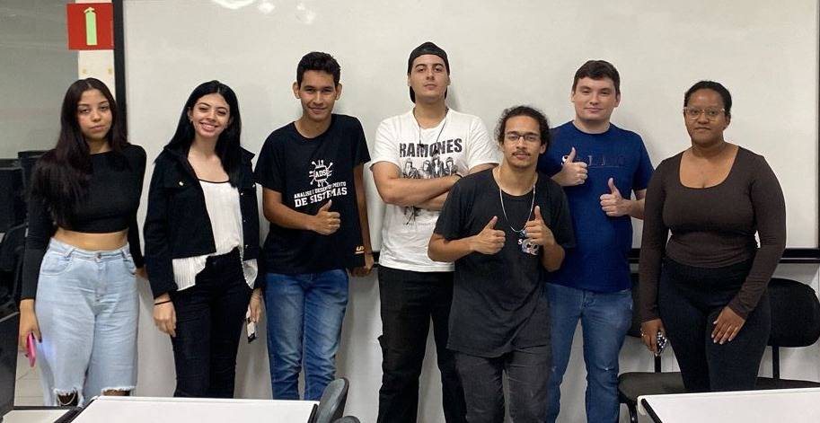

Nosso sistema é voltado para fazendas urbanas, uma ferramenta essencial para melhorar a eficiência e a sustentabilidade do fornecimento de alimentos nas cidades. Com ele, buscamos não apenas otimizar a operação das fazendas urbanas, mas também inspirar outras iniciativas a adotar práticas agrícolas sustentáveis e tecnológicas.
| ID | Nome | Quantidade | Local de Estoque |
|---|
O Fruit Master é uma ferramenta essencial para melhorar a eficiência e a sustentabilidade do fornecimento de alimentos nas cidades. Com ele, buscamos não apenas otimizar a operação das fazendas urbanas, mas também inspirar outras iniciativas a adotar práticas agrícolas sustentáveis e tecnológicas. Este sistema é um exemplo do compromisso de desenvolver soluções inovadoras para os desafios contemporâneos.
O objetivo do Fruit-Master é otimizar o gerenciamento de estoque em fazendas urbanas, facilitando o cadastro, a atualização e o controle dos produtos agrícolas. Com isso, busca-se promover a sustentabilidade, a eficiência operacional e a transparência na cadeia produtiva.
Sustentabilidade: Reduz o desperdício de alimentos e promove práticas agrícolas sustentáveis.
Eficiência: Automatiza o gerenciamento de estoque, economizando tempo e recursos.
Transparência: Proporciona informações claras sobre o cultivo e a validade dos produtos, fortalecendo a confiança dos consumidores.
Inovação: Utiliza tecnologia moderna para resolver desafios antigos da agricultura urbana.
 Whatsapp
Whatsapp
 E-mail
E-mail